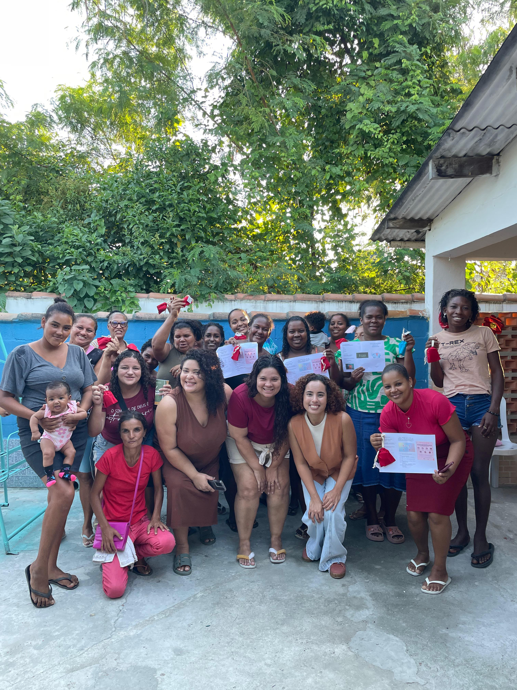
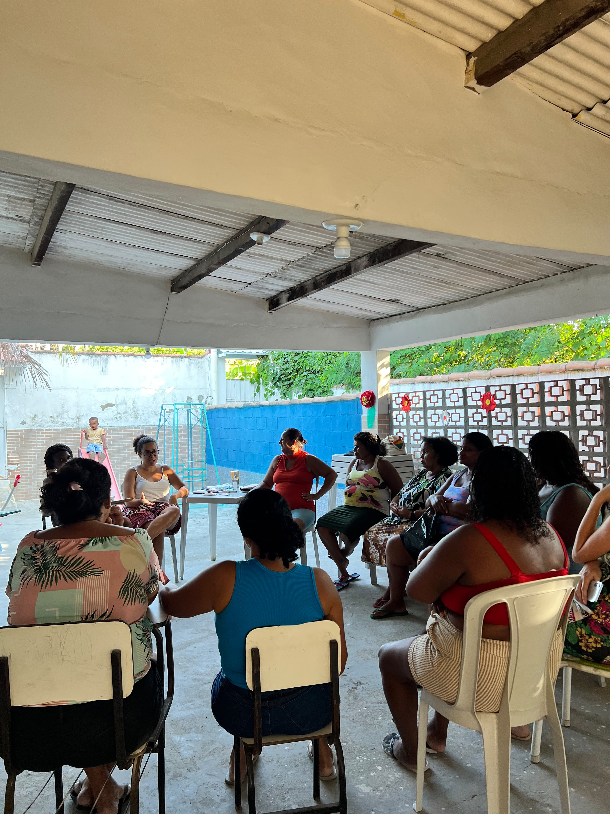
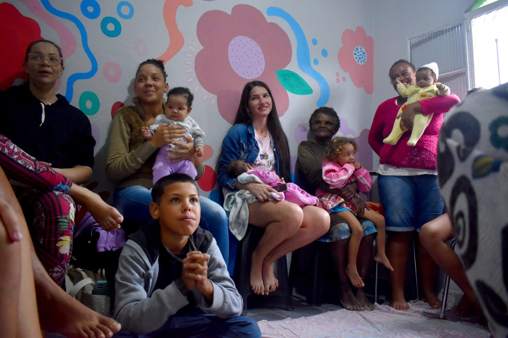

01
Cidadania e direitos
Compartilhamento de informações para que as participantes conheçam seus direitos e saibam como buscar apoio nos serviços públicos.
Alianças que sustentam o território e fortalecem mulheres por meio da cidadania, do acesso aos direitos, da justiça social e das redes de proteção.

O Aldear é um programa do Espaço Gaia voltado ao fortalecimento das mulheres do território, promovendo encontros regulares para tratar de cidadania, acesso a direitos e justiça social.
A iniciativa reúne participantes de 16 a 80 anos em um ambiente seguro e acolhedor, com atenção especial ao apoio às mães e à prevenção e superação de ciclos de violência.
Aldear é construir alianças, compartilhar conhecimentos e fortalecer mulheres para que conheçam e exerçam seus direitos.
Os encontros promovem conhecimento, acolhimento, orientação e articulação com serviços essenciais.
Compartilhamento de informações para que as participantes conheçam seus direitos e saibam como buscar apoio nos serviços públicos.
Criação de espaços seguros de escuta, acolhimento, troca e valorização das experiências das mulheres do território.
Orientação e construção de redes que contribuam para prevenir, identificar e superar ciclos de violência.
Aproximação entre comunidade, profissionais, equipamentos públicos e políticas sociais disponíveis no território.
Os encontros do Projeto Aldear são construídos a partir das necessidades das mulheres e das realidades vividas no território.
Espaços de escuta, compartilhamento de experiências e construção coletiva.
Informações sobre cidadania, políticas públicas e serviços de proteção.
Apoio para acessar profissionais, equipamentos públicos e redes parceiras.
Formação de vínculos entre mulheres de diferentes idades e trajetórias.


O projeto aproxima as participantes de profissionais e instituições que contribuem com orientações, informações e acesso às políticas públicas.
Apoio na orientação sobre direitos, benefícios e serviços socioassistenciais.
Aproximação das participantes com os serviços de proteção social disponíveis no território.
Contribuições para o cuidado emocional, fortalecimento pessoal e prevenção da violência.
Especialistas que compartilham conhecimentos e orientações sobre diferentes temas.
Por meio das trocas realizadas nos encontros, o Projeto Aldear consolida uma rede de apoio que promove autonomia, proteção e fortalecimento.
A iniciativa reafirma o compromisso do Espaço Gaia com o desenvolvimento social e a garantia de direitos no território.
Sua contribuição ajuda a manter encontros, atividades, acolhimentos e ações que transformam vidas no território.

{kind=link}
{kind=link}
{kind=link}
{kind=link}
{kind=link}
{kind=link}